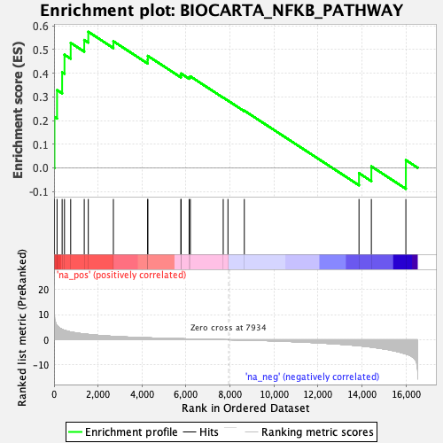
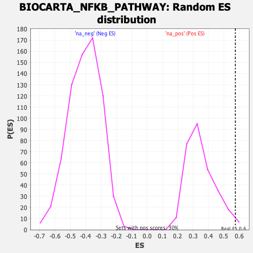

| | | Dataset | DE_genes2 |
| Phenotype | NoPhenotypeAvailable |
| Upregulated in class | na_pos |
| GeneSet | BIOCARTA_NFKB_PATHWAY |
| Enrichment Score (ES) | 0.57534057 |
| Normalized Enrichment Score (NES) | 1.6455852 |
| Nominal p-value | 0.02020202 |
| FDR q-value | 0.20830494 |
| FWER p-Value | 0.826 |
Table: GSEA Results Summary

Fig 1: Enrichment plot: BIOCARTA_NFKB_PATHWAY
Profile of the Running ES Score & Positions of GeneSet Members on the Rank Ordered List

Fig 2: BIOCARTA_NFKB_PATHWAY: Random ES distribution
Gene set null distribution of ES for BIOCARTA_NFKB_PATHWAY